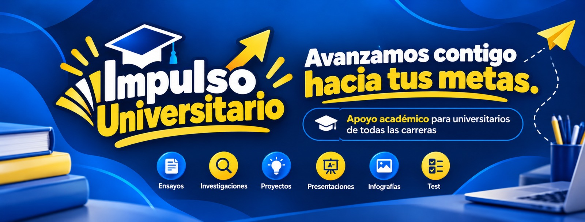

TU COMUNIDAD DE APOYO ACADÉMICO
Grandes metas.
Un impulso
para alcanzarlas.
Proyectos, investigaciones y nuevas ideas. Te acompañamos con orientación académica para que avances con confianza en tu vida universitaria.
✓ Atención personalizada✓ Todas las carreras
TU FUTURO ESTÁ EN MOVIMIENTO ✦
⌁
Una idea. Un proyecto.
Tu próximo gran paso.
↗Tu próximo gran paso.
Vamos
contigo. ✦
contigo. ✦
✦ Calidad◷ Puntualidad◇ Confidencialidad↗ Responsabilidad

Nuestra visión
01 / LO QUE HACEMOS
El apoyo que necesitas.
En cada etapa.
Cuéntanos qué estás preparando.
Encontramos juntos el camino para avanzar.
De la idea al formato que necesitas Word · PowerPoint · Excel · PDF · Canva
02 / TU UNIVERSIDAD, MÁS CERCA
Empezamos con UNEMI.
El impulso es para todos.
Un punto de encuentro con recursos y accesos útiles para tu experiencia universitaria.
03 / MANTENTE AL DÍA
Lo nuevo en tu
vida universitaria.
04 / APRENDE A TU RITMO
Ideas que te ayudan
a dar el siguiente paso.
Guías prácticas y un espacio para los próximos
videos de Impulso Universitario.
▷
IMPULSO EN VIDEO · PRÓXIMAMENTE
PRÓXIMAMENTE
Aprende, organiza y avanza
Aquí encontrarás nuestros videos y tutoriales cuando sean publicados.
01 ¿Cómo empezar una investigación? +
Delimita tu tema, plantea una pregunta, busca fuentes confiables y organiza un esquema. Guarda las referencias desde el inicio y consulta los requisitos de tu docente.
02 Prepara una presentación clara +
Define una idea central por diapositiva. Usa textos breves, imágenes pertinentes y una secuencia de introducción, desarrollo y conclusiones. Ensaya tu exposición.
03 Organiza tu semana académica +
Registra fechas de entrega, divide cada proyecto en pasos pequeños y reserva tiempo para revisión. Prioriza por fecha y complejidad.
ASÍ AVANZAMOS CONTIGO
De tu primera duda
a un plan claro.
Cuéntanos tu objetivo
Comparte tu carrera, el tipo de proyecto y tu fecha de entrega.
Definimos el apoyo
Acordamos alcance, formato, tiempos y condiciones de la asesoría.
Avanzamos juntos
Recibe orientación y revisión para desarrollar tu propio trabajo.
EL PRIMER PASO ES CONVERSAR
¿Qué meta
impulsamos hoy?
Estamos aquí para acompañarte.
Cuéntanos en qué necesitas orientación.
Asesoría con responsabilidad académica. Promovemos el aprendizaje y la autoría del estudiante.
UN IMPULSO PARA SEGUIR
Cada paso cuenta.
Tu meta sigue ahí.
Un semestre difícil no borra lo que has aprendido. Organiza tus ideas, pide apoyo y vuelve a dar el siguiente paso. Avanzamos contigo hacia tus metas.
WhatsApp · prontoSIGAMOS EN CONTACTO
Tu comunidad,
también en redes.
Información, recursos y nuevas oportunidades para avanzar contigo.
Los canales pendientes se activarán cuando publiquemos sus enlaces.Antes de empezar
¿Solo atienden a estudiantes de UNEMI? +
No. Empezamos con recursos de UNEMI y ofrecemos asesoría para estudiantes de todas las universidades y carreras.
¿Cómo se acuerdan los tiempos y el costo? +
Se definen después de revisar el alcance de tu solicitud. La disponibilidad se confirma antes de iniciar.
¿Cómo se utilizan mis datos? +
El formulario prepara tu consulta para el canal de contacto configurado. Si solicitas atención desde el chatbot, tu nombre, teléfono y duda se guardan para que el equipo te contacte. Si descargas el mensaje, se guarda en tu dispositivo. No envíes contraseñas, documentos sensibles ni credenciales universitarias.